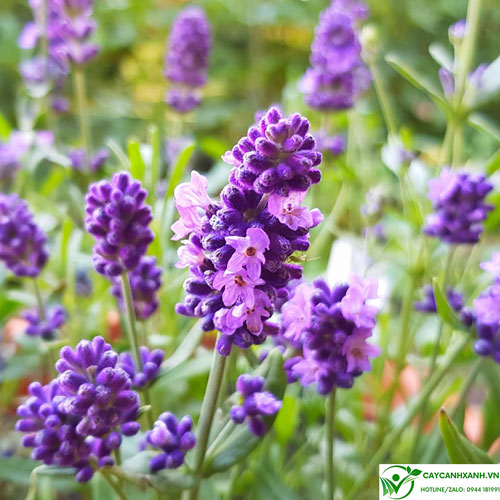

Xuất xứ: Pháp
Màu sắc: Tím
Chiều cao: 30 - 60 cm
Mùa nở hoa Mùa hè
Hoa Oải Hương (Lavender) nổi tiếng với sắc tím đặc trưng và hương thơm dễ chịu. Tinh dầu từ hoa thường được sử dụng trong liệu pháp thư giãn, giúp giảm căng thẳng và tạo cảm giác thoải mái. Hoa Oải Hương còn là biểu tượng của sự thủy chung, bình yên và lòng chân thành. Cây phù hợp để trồng trong chậu, ban công hoặc sân vườn, đồng thời góp phần mang lại không gian sống gần gũi với thiên nhiên và hương thơm dễ chịu.